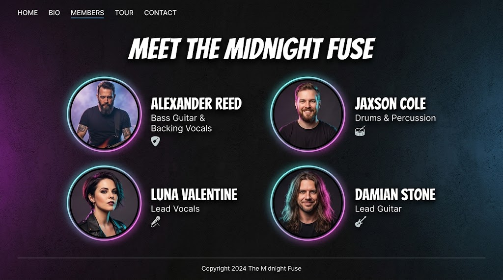
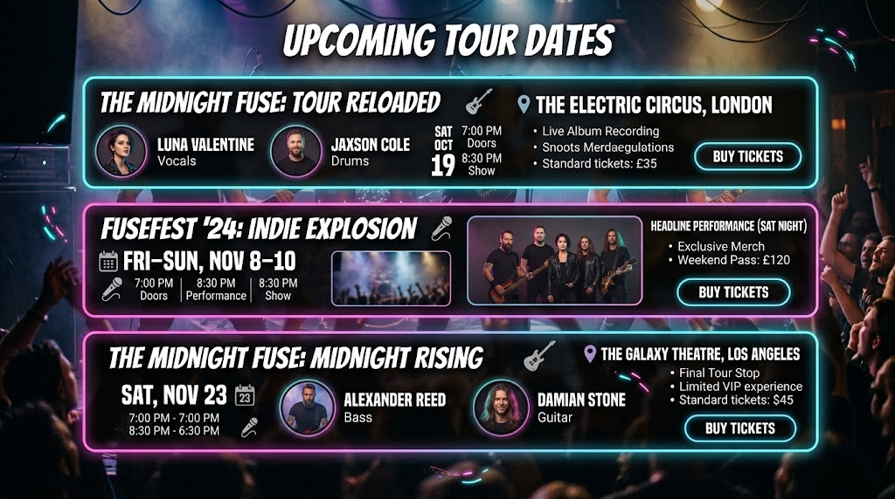

林月 YUE
主唱・把心事唱成光
OUR STORY — 01
THE PEOPLE — 02
每個人的聲音都不同，
合在一起，才是午夜電波。

主唱・把心事唱成光
吉他・替沉默寫下旋律
貝斯・讓節奏穩穩落地
鼓・替每個夜晚點火
MEET US LIVE — 03
把耳機收起來，
我們在現場等你。

AUG 08 2026
台北市中正區八德路一段 1 號
AUG 15 2026
台中市西屯區安和路 117 號
AUG 22 2026
高雄市鹽埕區大義街 2-5 號
SEP 05 2026
華山 1914 文化創意產業園區
NEXT SIGNAL · TAIPEI
下一次見面，正在靠近。
計算演出日期中…
A FIRST LISTEN — 04
寫給那些走得很晚、卻依然相信明天的人。戴上耳機，和我們一起慢慢走。
試聽音訊取自專案影片 · 點擊播放即可聆聽